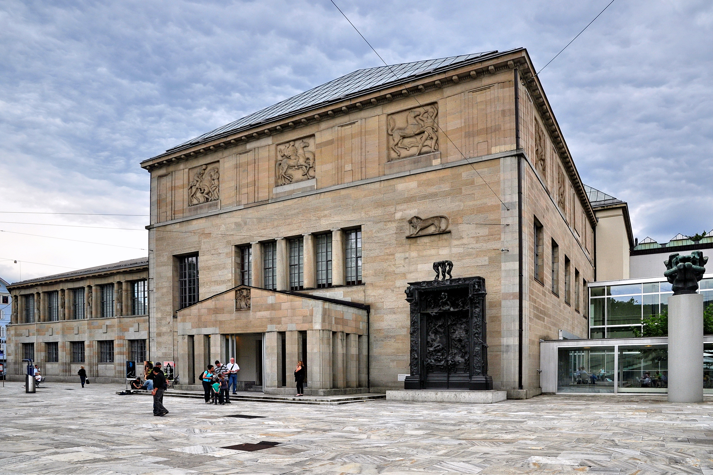
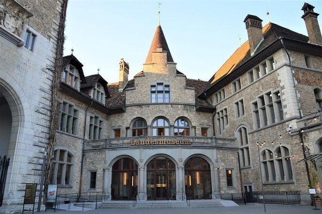
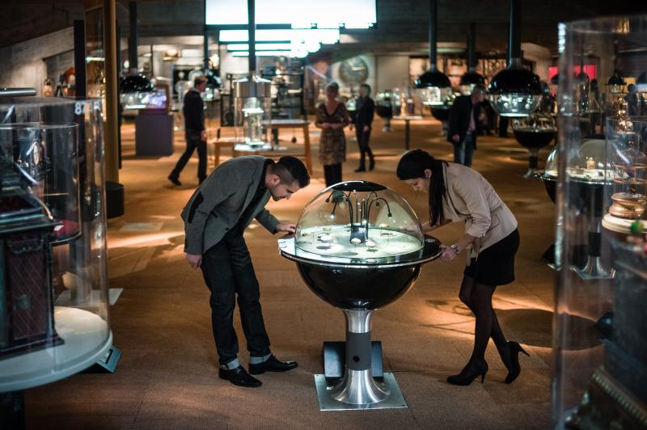

Switzerland's culture is uniquely diverse — shaped by its four linguistic communities (German, French, Italian, and Romansh) and centuries of political independence. Swiss culture blends Alpine rural traditions with sophisticated urban arts and a strong commitment to neutrality, democracy, and precision craftsmanship.
Art & Museums

Kunsthaus Zurich
Switzerland's largest art museum with works from the Middle Ages to the present day, including excellent Impressionist, Expressionist, and Swiss collections.

Fondation Beyeler, Basel
One of Europe's finest private art collections in a stunning Renzo Piano building. Houses Monet, Picasso, Warhol, and countless masterpieces.

Swiss National Museum, Zurich
The country's most important history museum. The stunning castle-like building contains artefacts spanning Swiss history from prehistoric times to the present.

International Museum of Watchmaking, La Chaux-de-Fonds
A comprehensive museum dedicated to Swiss horology — the art and science of watchmaking. UNESCO-listed city of watchmaking.
Traditions & Customs
- Alphorn – The iconic wooden wind instrument, originally used to communicate across mountain valleys
- Yodelling – Traditional vocal technique from the Alps, still performed at folk festivals
- Schwingen – Traditional Swiss wrestling in sawdust pits — a beloved national sport
- Fasnacht – Elaborate carnival celebrations, most famous in Basel (pre-Lent) and Lucerne
- Landsgemeinde – Open-air democratic assemblies still held in some cantons, a living symbol of direct democracy
- Cow parades (Alpaufzug/Alpabzug) – Cows decorated with flowers and bells for their summer ascent to Alpine pastures
Music & Performing Arts
Switzerland has a rich classical music tradition. Zurich Opera House is one of the finest opera venues in Europe. The Lucerne Festival (summer) draws some of the world's greatest orchestras and conductors. Montreux is world-famous for its Jazz Festival. Geneva's Grand Théâtre hosts world-class ballet and opera.
Literature & Famous Swiss
Switzerland has produced remarkable thinkers and artists despite its small size. The country was home to writers Hermann Hesse and Max Frisch, architect Le Corbusier (born in La Chaux-de-Fonds), and psychologist Carl Jung. Albert Einstein developed his Theory of Special Relativity while working as a patent clerk in Bern. William Tell, though legendary, is the enduring symbol of Swiss independence.
Notable Swiss Figures
Hermann Hesse – Author (Siddhartha)
Albert Einstein – Physicist
Le Corbusier – Architect
Carl Jung – Psychologist
Roger Federer – Tennis legend
Jean-Jacques Rousseau – Philosopher
Swiss Watchmaking
Switzerland is synonymous with precision watchmaking. The Swiss watch industry, centered in the Jura Arc (La Chaux-de-Fonds, Biel, Geneva), produces some of the world's most prestigious timepieces. Brands like Rolex, Omega, Patek Philippe, TAG Heuer, and Swatch are Swiss institutions. Many brands offer factory tours or have their own museums.